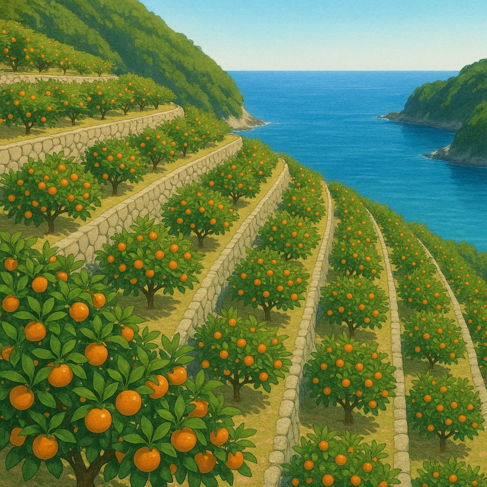

Ⅱ-2
果樹栽培
和歌山県は
ある果物
が全国1位
和歌山県…
紀ノ川
流域などで
②
みかん
の栽培が盛ん。
この果物の生産量の割合
（2022年）
和歌山 22.4%
静岡 16.0
愛媛 15.1
熊本 11.0
長崎 5.9
その他 29.6
なぜ和歌山？
冬でも暖かい太平洋側の気候と、日当たりのよい斜面が、この栽培に向いている。
場所は紀ノ川流域
果物の名前だけでなく、
紀ノ川
という川の名前までセットで覚える。
上位の顔ぶれ
和歌山・静岡・愛媛・熊本・長崎。
あたたかい地方
ばかりが並ぶ。

第15章 近畿地方
SEED EDUCATION